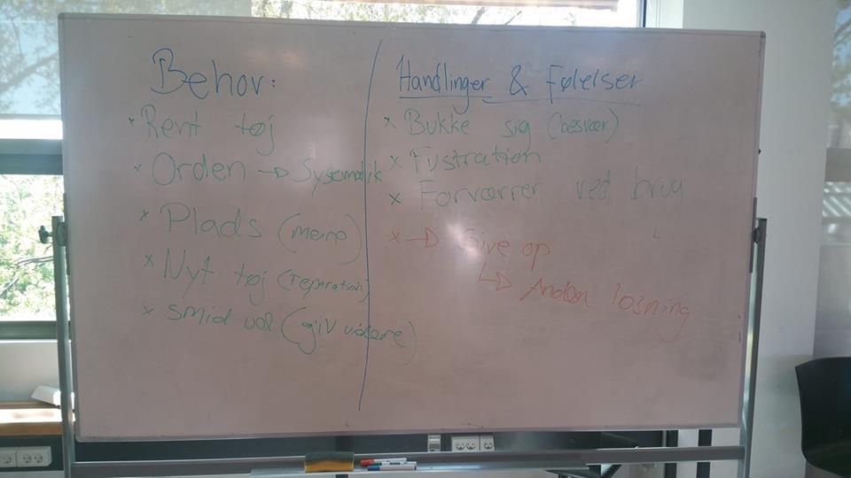

OBSERVATIONER
ANDERS & HANS KLÆDESKAB
What?
- Anders leder efter rene bukser i sit klædeskab
- Klædeskabet er propfyldt, meget rodet og ustruktureret
- Anders kan ikke finde nogle rene bukser, der ikke er enten i stykker eller for små
- Han tager skiftevis de bukser han finder i hånden, og ved ikke, hvor han skal gøre af dem
- Selvom bukserne er i stykker eller han ikke kan bruge dem, så lægger han dem tilbage i de fyldte skuffer
How?
- Anders er frustreret og irriteret over situationen
- Han er forvirret, går frem og tilbage og kigger i de samme skuffer igen
- Under søgningen reflekterer han over, at han burde smide de ødelagte bukser ud/til genbrug etc.
- Til sidst opgiver han at finde noget i skabet, og vil istedet kigge i snavsetøjskurven
Why?
- Anders vil gerne ha' rent tøj på
- Han er et rodehoved
- Han har gode intentioner om genbrug, men får det ikke gjort